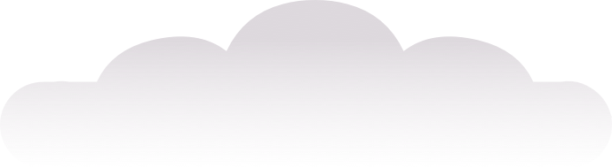
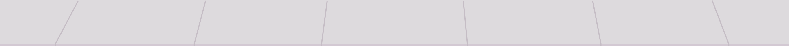

(To get the full experience, please view this project on desktop)
It's been a long time, I know it has. But I managed to get to the restaurant. I may have avoided eye contact as best as I could, but I was there, sitting across from you.
My hair was cut short and it's a different color than you saw last. You didn't recognize it. You see, I'm new now: a new person. I'm not who you used to know. Can't you tell by my hair?
But you started talking. Of course you did, we were at dinner together. You and the New Me. You started talking and I could hear myself laughing. I could hear my laughter and it was the same as it was when I got to hear you talk every day. And suddenly I could see myself again, through all of the doors I pulled shut between us. With you, I am myself. I don't know what it is, but something clicks into place when I hear you talk and suddenly I am who I always have been. Being there felt familiar and broken and I wanted to stay as long as I could.
When dinner was over, you walked away in the middle of a sentence. And now I have to go back to being the new me again. I might cut my hair.
I found myself in the park tonight, surrounded by crowds of people. All sorts of people! It made my heart light, how many people had gathered to sing and cheer and chant amongst strangers. Amidst all of the chaos in the park, you were the farthest thing from my mind but I looked over to my side and somehow you were there. You were actually there! How do you manage to be everywhere?
The last time we were in that park together, it was summertime. That day I wrote about in my journal, and at the end I said "I could've lived in that moment forever."
I looked over again and you and your friends had moved further into the crowd, out of my sight.
I saw you ride by me on a bike I've never seen before. I had to squint to tell if it was you, but you looked away before I could figure it out. As I walked to class I started to rehearse all of the things I never got to say. I could finally yell, louder and louder as the retorts I knew you would have spat at me rung through my head. And my chest felt tight as I sat in my chair. The lecture began and I couldn't hear us anymore.
I remembered when I last saw you drunk as I watched you flirt with a girl across the bar tonight. That time, a whole year ago (or has it been longer?), you insisted you needed me next to you, and you wouldn't stop until I crossed the livingroom and took a seat beside you. I was the only thing you needed, you said. You didn't see me at the bar tonight but the next time I turned my head you were standing next to me and your lips were on hers.
It's been approximately 4 months since we last spoke before today. 4 months of silence, and 4 more months before that. And it's been almost a year since you last got VIP access to my thoughts. And yet, I sat down at the table today with the two friends we could both do a better job staying in touch with. I had a coffee in my hand and the first thing you said was "I thought you stopped drinking coffee!"
It's been one year since I've told you I stopped drinking coffee. But you remembered that afternoon conversation. And you didn't realized I went on that melodramatic anti-coffee rant knowing I would only last in my coffee abstention for maybe a month. But you weren't around a month later to find out. You thought I was more dedicated to the coffeeless cause. And you remembered.
Just so you know, I drink coffee again.
"I'm over it", you know. We still don't speak and I'm over it. You'll never know what I had to say and I'm over it. I'm so over it, I'm even dating a girl now. And we're happy. And she doesn't know I still draft emails to you in my head. But I'm over it.
This piece explores hybrid writing through the lens of digital experiences. It asks the questions: how can the traditional reading experience be transformed using such tools as interaction design, development, and illustration? How can multi-media enhance the emotionality of a writing piece?
By these approaches, the reader is invited to step into the narrator’s shoes, sit down at the computer, and experience words unsend.